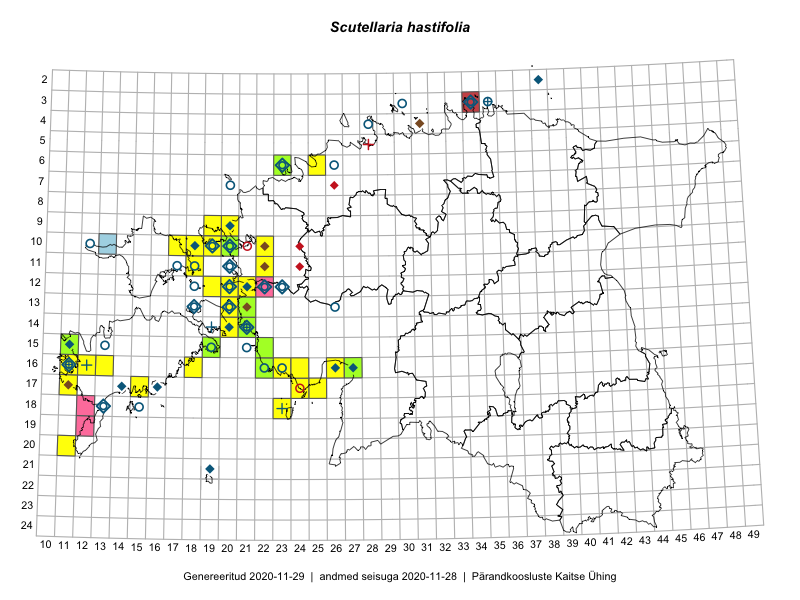

Scutellaria hastifolia
Uuendatud: 2016-12-02
Kaardile koondatud taksonid: Scutellaria hastifolia L.

Kaart põhineb 24 kirjel, neist vaatlusi 23 ja eksemplare 1. Taksonit on leitud 19 ruudust.
Kuvatud viited 20 esimesele andmebaasikirjele, ülejäänud PlutoFis
- Malle Leht: 2015-07-09: : ala
- Ott Luuk: 2014-07-27: 12-20: GPS punkt
- Ott Luuk: 2014-07-24: 12-20: ala
- Peedu Saar, Elle Roosaluste: 2015-07-12: 13-20: ala
- Malle Leht: 2015-07-27: 18-40: ala
- Malle Leht: 2015-07-18: 19-40: ala
- Ott Luuk: 2015-07-01: 15-11: GPS punkt
- Maret Gerz, Leena Gerz: 2015-08-09: 16-24: ala
- Mari Reitalu, Triin Reitalu: 2014-08-15: 20-11: ala
- Meeli Mesipuu: 2015-06-21: 15-19: ala
- Meeli Mesipuu: 2015-06-21: 15-19: GPS punkt
- Meeli Mesipuu, Kadri Tali: 2015-06-26: 14-20: ala
- Maret Gerz, Leena Gerz: 2015-08-12: 17-24: ala
- Mari Reitalu: 2015-07-08: 16-12: ala
- Meeli Mesipuu: 2015-06-19: 16-26: ala
- Sirje Azarov, Aira Alasi: 2015-07-20: 16-13: ala
- Mari Metsoja, Jaak-Albert Metsoja: 2015-07-25: 06-25: ala
- Mari Reitalu, Triin Reitalu: 2016-06-30: 15-19: ala
- Sirje Azarov, Oliver Parrest: 2016-07-07: 10-22: ala
- Sirje Azarov, Oliver Parrest: 2016-07-07: 11-22: ala